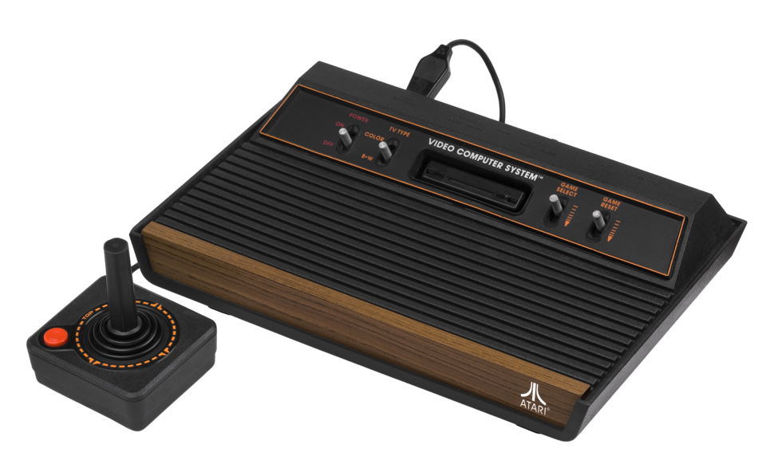
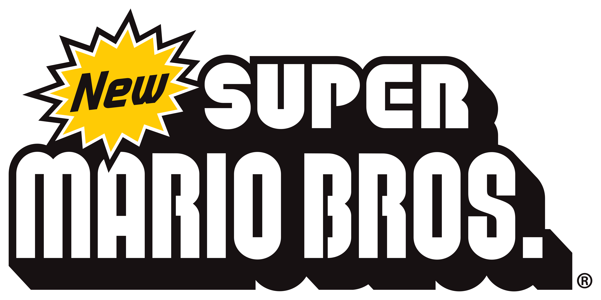
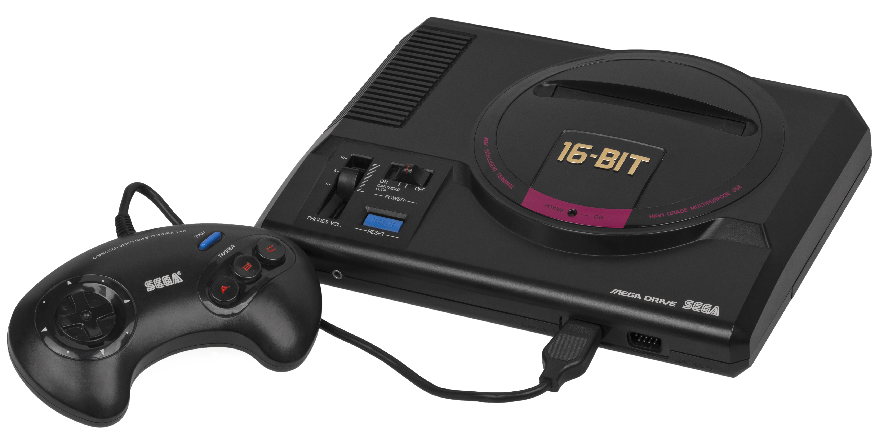
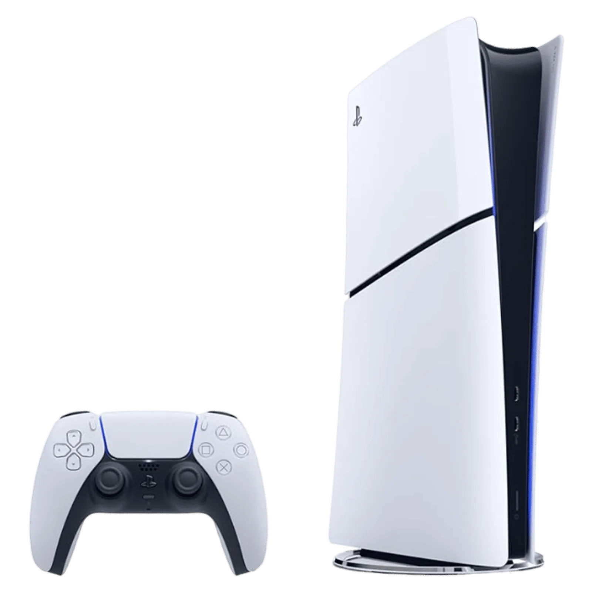

Console Atari 2600
Levou os cartuchos para dentro de casa.
Pac-Man
Lançado em 1980, virou o grande ícone dos fliperamas.

Super Mario Bros
Ajudou o NES a recuperar o mercado depois da crise.

Mega Drive
Principal rival da Nintendo, famoso por Sonic.

PlayStation 1
Lançado em 1994, popularizou os jogos em 3D e o uso de CDs nos consoles.

PlayStation 5
O console mais recente da Sony, com tecnologia avançada e desempenho excepcional.